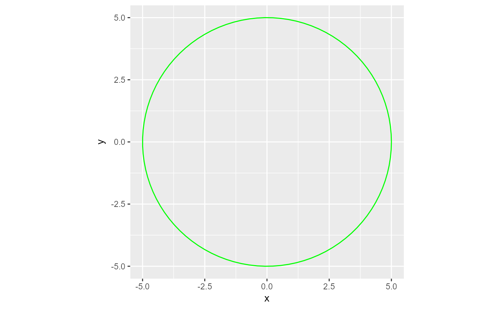
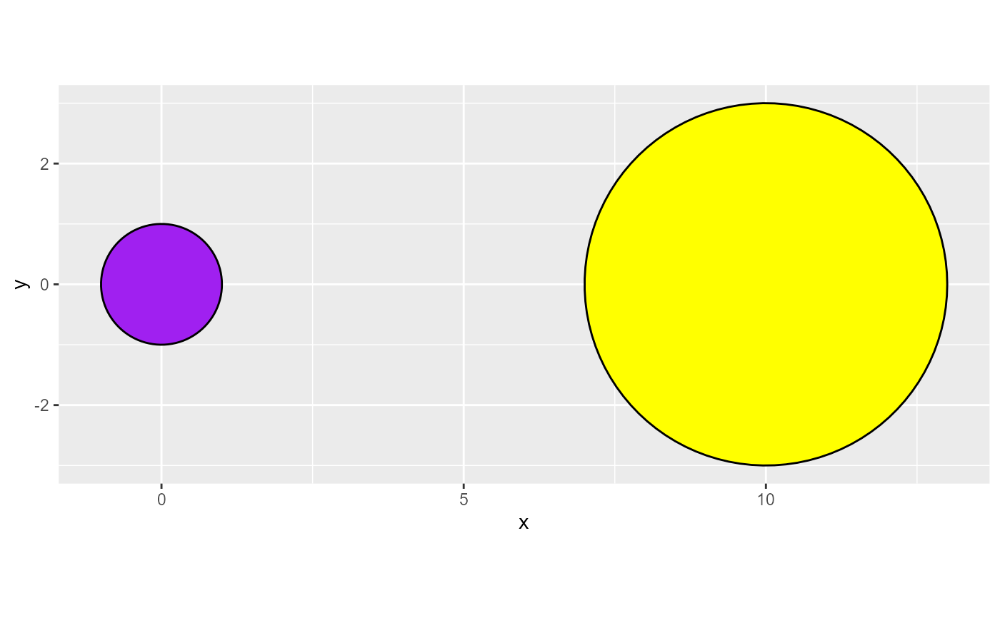

A tool for creating a data frame of values that creates a circle with a specified radius when plotted.
The geom_path and geom_polygon geoms are recommended with this data for use in ggplot2 for generative art.
Usage
circle_data(
x,
y,
radius,
color = NULL,
fill = NULL,
n_points = 100,
group_var = FALSE,
group_prefix = "circle_"
)Arguments
- x
Numeric value of length 1 - The center
xcoordinate value of the circle.- y
Numeric value of length 1 - The center
ycoordinate value of the circle.- radius
Numeric value of length 1 that must be greater than 0 - The radius of the circle.
- color
Character value of length 1 - The intended color of the circle's border. A valid
Rcolor fromcolors()or a standard 6 digit hexadecimal webcolor like "#000000"- fill
Character value of length 1 - The intended color of the circle. A valid
Rcolor fromcolors()or a standard 6 digit hexadecimal webcolor like "#000000"- n_points
Numeric value. Default is 100. This determines how many points the circle will have. This option can come in handy when using jitter options or other texture/illusion methods. Must be of length 1 and at least a value of 100.
- group_var
Logical. Default is
FALSE. IfTRUE, agroupvariable will be added to the dataframe. Useful in iterative data generation.- group_prefix
Character string of length 1 - The prefix used for the
groupvariable. Default is "circle_"
Examples
# Creating one circle
library(ggplot2)
one_circle <- circle_data(x = 0, y = 0, radius = 5)
# Plot The Data
one_circle |>
ggplot(aes(x, y)) +
geom_path(color = "green") +
coord_equal()

# To create multiple circles, use your preferred method of iteration:
# Creating two circles
library(purrr)
#> Warning: package 'purrr' was built under R version 4.4.3
library(dplyr)
#> Warning: package 'dplyr' was built under R version 4.4.3
#>
#> Attaching package: 'dplyr'
#> The following objects are masked from 'package:stats':
#>
#> filter, lag
#> The following objects are masked from 'package:base':
#>
#> intersect, setdiff, setequal, union
# Make your specs
x_vals <- c(0, 10)
y_vals <- c(0, 0)
radi <- c(1, 3)
fills <- c("purple", "yellow")
circle_n <- 1:2
# Prep for your iteration
lst_circle_specs <-
list(
x_vals,
y_vals,
radi,
fills,
circle_n
)
# Use `circle_data()` in your preferred iteration methods
two_circles <- pmap(lst_circle_specs, ~ circle_data(
x = ..1,
y = ..2,
radi = ..3,
fill = ..4,
color = "#000000",
group_var = TRUE
) |>
# circle_data adds a `group` variable if `group_var` = TRUE.
# For multiple circles, a unique identifier should be added/pasted in.
mutate(group = paste0(group, ..5))) |>
list_rbind()
# Plot the data
two_circles |>
ggplot(aes(x, y, group = group)) +
theme(legend.position = "none") +
geom_polygon(
color = two_circles$color,
fill = two_circles$fill
) +
coord_equal() #Always use coord_equal() or coord_fixed for circles!
